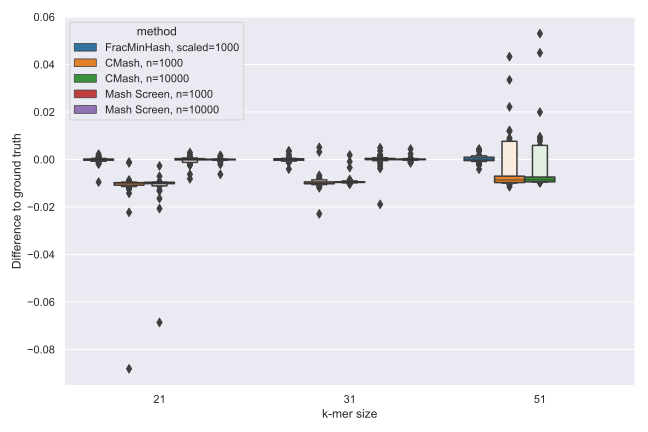
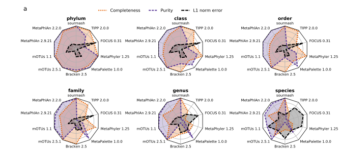

Luiz Irber 0000-0003-4371-9659
· luizirber
· luizirber
Graduate Group in Computer Science, UC Davis; Department of Population Health and Reproduction, UC Davis
· Funded by Grant GBMF4551 from the Gordon and Betty Moore Foundation; Grant R01HG007513 from the NIH NHGRI
Phillip T. Brooks 0000-0003-3987-244X
· brooksph
· brooksph
Department of Population Health and Reproduction, UC Davis
· Funded by Grant GBMF4551 from the Gordon and Betty Moore Foundation
Taylor Reiter 0000-0002-7388-421X
· taylorreiter
· ReiterTaylor
Graduate Group in Food Science, UC Davis; Department of Population Health and Reproduction, UC Davis
· Funded by Grant GBMF4551 from the Gordon and Betty Moore Foundation; Grant R03OD030596 from the NIH Common Fund
N. Tessa Pierce-Ward 0000-0002-2942-5331
· bluegenes
· saltyscientist
Department of Population Health and Reproduction, UC Davis
· Funded by Grant 1711984 from the NSF; Grant GBMF4551 from the Gordon and Betty Moore Foundation; Grant 2018911 from the NSF
Mahmudur Rahman Hera
· mahmudhera
· HeraMahmudur
Department of Computer Science and Engineering, Penn State University
· Funded by Grant 2029170 from the NSF
David Koslicki 0000-0002-0640-954X
· dkoslicki
· DavidKoslicki
Department of Computer Science and Engineering, Penn State University; Department of Biology, Penn State University; Huck Institutes of the Life Sciences, Penn State University
· Funded by Grant 2029170 from the NSF
C. Titus Brown 0000-0001-6001-2677
· ctb
Department of Population Health and Reproduction, UC Davis
· Funded by Grant GBMF4551 from the Gordon and Betty Moore Foundation; Grant R01HG007513 from the NIH NHGRI; Grant 2018911 from the NSF; Grant R03OD030596 from the NIH Common Fund
Abstract
The identification of reference genomes and taxonomic labels from
metagenome data underlies many microbiome studies. Here we describe
two algorithms for compositional analysis of metagenome sequencing
data. We first investigate the FracMinHash sketching technique, a
derivative of modulo hash that supports Jaccard containment estimation
between sets of different sizes. We implement FracMinHash in the
sourmash software, evaluate its accuracy, and demonstrate large-scale
containment searches of metagenomes using 700,000 microbial reference
genomes. We next frame shotgun metagenome compositional analysis as
the problem of finding a minimum collection of reference genomes that
“cover” the known k-mers in a metagenome, a minimum set cover problem.
We implement a greedy approximate solution using FracMinHash sketches,
and evaluate its accuracy for taxonomic assignment using a CAMI
community benchmark. Finally, we show that the minimum metagenome
cover can be used to guide the selection of reference genomes for read
mapping. sourmash is available as open source software under the BSD 3-Clause
license at
github.com/dib-lab/sourmash/.
Introduction
Shotgun DNA sequencing of microbial communities is an important
technique for studying host-associated and environmental microbiomes
[1,2]. By
sampling the genomic content of microbial communities, shotgun
metagenomics enables the taxonomic and functional characterization of
microbiomes
[3,4].
However, this characterization relies critically on the methods and
databases used to interpret the sequencing data
[5,6,7,8].
Metagenome function and taxonomy are typically inferred from available
reference genomes and gene catalogs, via direct genomic alignment
[9,10], large-scale protein search [11,12,13],
or k-mer matches [14,15]. For many of these methods, the
substantial increase in the number of available microbial reference
genomes (1.1m in GenBank as of November 2021) presents a significant
practical obstacle to comprehensive compositional analyses. Most
methods choose representative subsets of available genomic information
to analyze; for example, bioBakery 3 provides a database containing
99.2k reference genomes [9]. Scaling metagenome analysis
approaches to make use of the rapidly increasing size of GenBank is an
active endeavor in the field [16,17].
Here, we describe a lightweight and scalable approach to compositional
analysis of shotgun metagenome data based on finding the minimum set
of reference genomes that accounts for all known k-mers in a
metagenome - a “minimum metagenome cover”. We use a mod-hash based
sketching approach for k-mers to reduce memory requirements
[18], and implement a polynomial-time greedy
approximation algorithm for the minimum set cover analysis
[19].
Our approach tackles the selection of appropriate reference genomes
for downstream analysis and provides a computationally efficient
method for taxonomic classification of metagenome data. Our
implementation in the sourmash open source software package works with
reference databases containing a million or more microbial genomes and
supports multiple taxonomies and private databases.
Results
We first describe FracMinHash, a sketching technique that supports
containment and overlap estimation for DNA sequencing datasets using
k-mers. We next frame reference-based metagenome content analysis as
the problem of finding a minimum set cover for a metagenome using a
collection of reference genomes. We then evaluate the accuracy of this
approach using a taxonomic classification benchmark. Finally, we
demonstrate the utility of this approach by using the genomes from the
minimum metagenome cover as reference genomes for read mapping.
FracMinHash sketches support accurate containment operations
We define the fractional MinHash, or FracMinHash, on an input domain
of hash values \(W\), as follows:
\[\mathbf{FRAC}_s(W) = \{\,w \leq \frac{H}{s} \mid \forall w \in
W\,\}\] where \(H\) is the largest possible value in the domain of
\(h(x)\) and \(\frac{H}{s}\) is the maximum hash value allowed in the
FracMinHash sketch.
The FracMinHash is a mix of MinHash and ModHash
[18,20]. It keeps the selection of the smallest
elements from MinHash, while using the dynamic size from ModHash to
allow containment estimation. However, instead of taking \(0 \mod m\)
elements like \(\mathbf{MOD}_m(W)\), a FracMinHash uses the parameter
\(s\) to select a subset of \(W\).
Like ModHash (but not MinHash), FracMinHash supports estimation
of the containment index:
Given a uniform hash function \(h\) and \(s=m\), the cardinalities of
\(\mathbf{FRAC}_s(W)\) and \(\mathbf{MOD}_m(W)\) converge for large
\(\vert W \vert\). The main difference is the range of possible values
in the hash space, since the FracMinHash range is contiguous and
the ModHash range is not. This permits a variety of convenient
operations on the sketches, including iterative downsampling of FracMinHash sketches as well as conversion to MinHash sketches.
A FracMinHash implementation accurately estimates containment between sets of different sizes
We compare the FracMinHash method, implemented in the sourmash
software [21], to Containment MinHash[22]
and Mash Screen (Containment Score) [23] for containment
queries in data from the podar mock community, a mock bacterial and
archaeal community where the reference genomes are largely known
[24]; see also Table 1, row 2. This data
set has been used in several methods evaluations
[23,25,26,27].
Figure 1:Letter-value plot [28] of the
differences from containment estimate to ground truth (exact).
Each method is evaluated for \(k=\{21,31,51\}\),
except for Mash with \(k=51\), which is unsupported.
Figure 1 shows containment analysis of genomes in this metagenome, with low-coverage and
contaminant genomes (as described in [27] and
[23]) removed from the database.
All methods are within 1% of the exact containment on average (Figure
1), with CMash consistently underestimating
the containment. Mash Screen with \(n=10000\) has the smallest difference to ground truth for
\(k=\{21, 31\}\), followed by sourmash with scaled=1000 and Mash Screen with \(n=1000\).
The sourmash sketch sizes varied between 431 hashes and 9540 hashes,
with a median of 2741 hashes.
FracMinHash can be used to construct a minimum set cover for metagenomes
We next ask: what is the smallest collection of genomes in a database
that contains all of the known k-mers in a metagenome?
Formally, for a
given metagenome \(M\) and a reference database \(D\), what is the minimum
collection of genomes in \(D\) which contain all of the k-mers in the
intersection of \(D\) and \(M\)? We wish to find the smallest set
\(\{ G_n \}\) of genomes in \(D\) such that, for the k-mer decomposition \(k()\),
\[ k(M) \cap k(D) = \bigcup_n \{ k(M) \cap k(G_n) \} \]
This is a minimum set covering problem, for which there is a
polynomial-time approximation [19]:
Choose \(s \in G\) maximizing the contribution of the element \(f(C \cup \{ s \}) - f(C)\)
Let \(C \leftarrow C \cup \{ s \}\)
Return \(C\)
This greedy algorithm iteratively chooses reference genomes from \(D\)
in order of largest remaining overlap with \(M\). This results in a
progressive classification of the known k-mers in the
metagenome to specific genomes.1
In Figure 2, we show an example of this progressive
classification of k-mers by matching GenBank genome for podar mock. The matching genomes are provided
in the order found by the greedy algorithm, i.e. by overlap with remaining k-mers in the metagenome.
The
high rank (early) matches reflect large and/or mostly-covered genomes
with high containment, while later matches reflect genomes that share
fewer k-mers with the remaining set of k-mers in the metagenome -
smaller genomes, less-covered genomes, and/or genomes with substantial
overlap with earlier matches. Where there are overlaps between
genomes, shared common k-mers are “claimed” by higher rank matches and
only k-mer content specific to the later genome is used to find
lower rank matches.
As one example of metagenome k-mers shared with multiple matches,
genomes from two strains of Shewanella baltica are present in the
mock metagenome. These genomes overlap in k-mer content by approximately 50%, and these shared k-mers are first claimed by
Shewanella baltica OS223 – compare S. baltica OS223, rank
8, with S. baltica OS185, rank 33 in Figure
2. Here the difference between the red circles and green
triangles for S. baltica OS185 represents the k-mers claimed by
S. baltica OS223 .
For this mock metagenome, 205m (54.8%) of 375m k-mers were found in
GenBank
(see
Table 1, row 2). The remaining 169m (45.2%) k-mers had no matches, and
represent either k-mers introduced by sequencing errors or k-mers from
real but unknown community members.
Figure 2:K-mer decomposition of a metagenome into constituent genomes.
A rank ordering by remaining containment for the first 36 genomes from the minimum metagenome cover
of the podar mock synthetic metagenome [24],
calculated using 700,000 genomes from GenBank with scaled=2000, k=31. The Y axis is labeled with the NCBI-designated name of the
genome.
In the left plot, the X axis represents the estimated number of k-mers shared
between each genome and the metagenome. The red circles indicate the number
of matching k-mers that were not matched at previous ranks, while the green triangle symbols indicate all matching k-mers.
In the right plot, the X axis represents the estimated k-mer coverage of that
genome. The red circles indicate the percentage of the genome covered by k-mers remaining at
that rank, while the green triangles indicate overlap between
the genome and the entire metagenome, including those already assigned at previous ranks.
Minimum metagenome covers can accurately estimate taxonomic composition
We evaluated the accuracy of min-set-cov for metagenome decomposition
using benchmarks from the Critical Assessment of Metagenome
Interpretation (CAMI), a community-driven
initiative for reproducibly benchmarking metagenomic methods [29]. We used
the mouse gut metagenome dataset [30],
in which a simulated
mouse gut metagenome (MGM) was derived from 791 bacterial and
archaeal genomes,
representing 8 phyla,
18 classes,
26 orders,
50 families,
157 genera,
and 549 species.
Sixty-four samples were generated with CAMISIM,
with 91.8 genomes present in each sample on average.
Each sample is 5 GB in size, and both short-read (Illumina) and
long-read (PacBio) simulated sequencing data is available.
Since min-set-cov yields only a collection of genomes, this collection must be
converted into a taxonomy for benchmarking with CAMI.
We developed the following procedure for
generating a taxonomic profile from a given metagenome
cover. For each genome match, we note
the species designation in the NCBI taxonomy for that genome. Then, we
calculate the fraction of the genome remaining in the metagenome
after k-mers belonging to higher-rank genomes have been removed (i.e. red
circles in Figure 2 (a)). We use this fraction to weight
the contribution of the genome’s species designation to the
metagenome taxonomy. This procedure produces an estimate of that
species’ taxonomic contribution to the metagenome, normalized by the
genome size.
Figure 3: Comparison per taxonomic rank of methods in terms of completeness, purity (1% filtered), and L1 norm.
Figure 4: Methods rankings and scores obtained for the different metrics over all samples and taxonomic ranks. For score calculation, all metrics were weighted equally. A scaled value of 2000 and a k-mer size of 31 was used.
In Figures 3 and 4 we show an updated version of
Figure 6 from [30] that includes our
method, implemented in the sourmash software and benchmarked using
OPAL [31]. Here we compare 10 different methods for taxonomic
profiling and their characteristics at each taxonomic rank. While
previous methods show reduced completeness – the ratio of taxa
correctly identified in the ground truth – below the genus level,
sourmash can reach 88.7% completeness at the species level with the
highest purity (the ratio of correctly predicted taxa over all
predicted taxa) across all methods: 95.9% when filtering predictions
below 1% abundance, and 97% for unfiltered results. sourmash also
has the second lowest L1-norm error,
the highest number of true positives and the lowest number of
false positives.
Minimum metagenome covers select small subsets of large databases
Table 1: Four metagenomes and the number of genomes in the estimated minimum metagenome cover from GenBank, with scaled=2000 and k=31. Overlap and % 31-mers identified are estimated from FracMinHash sketch size.
data set
genomes >= 100k 31-mer overlap
size of min-set-cov
% 31-mers identified
zymo mock
405,839
19
47.1%
podar mock
5,800
74
54.8%
gut real
96,423
99
36.0%
oil well real
1,235
135
14.9%
In Table 1, we show the minimum metagenome cover
for four metagenomes against GenBank - two mock communities
[24,32], a human gut microbiome data set
from iHMP [3], and an oil well sample
[33]. Our implementation provides estimates
for both the total number of genomes with substantial overlap to a
query genome, and the minimum set of genomes that account for k-mers
with overlap in the query metagenome. Note that only matches estimated
to have more than 100,000 overlapping k-mers are shown (see Methods for
details).
We find many genomes with overlaps for each metagenome, due to
the redundancy of the reference database. For example, zymo mock
contains a Salmonella genome, and there are over 200,000 Salmonella
genomes that match to it in GenBank. Likewise, gut real
matches to over 75,000 E. coli genomes in GenBank. Since neither
podar mock nor oil well real contain genomes from species with
substantial representation in GenBank, they yield many fewer total
overlapping genomes.
Regardless of the number of genomes in the database with substantial
overlap, the
estimated minimum collection of genomes is always much smaller than the
number of genomes with overlaps. In
the cases where the k-mers in the metagenome are mostly identified,
this is because of database redundancy: e.g. in the case of zymo mock, the min-set-cov algorithm chooses precisely one Salmonella genome
from the 200,000+ available. Conversely, in the case of oil well real,
much of the sample is not identified,
suggesting that the small size of the covering set is because much
of the sample is not represented in the database.
Minimum metagenome covers provide representative genomes for mapping
Mapping metagenome reads to representative genomes is an important
step in many microbiome analysis pipelines, but mapping approaches
struggle with large, redundant databases [16,17]. One specific use for a minimum
metagenome cover could be to select a small set of representative genomes
for mapping. We therefore developed a hybrid selection and
mapping pipeline that uses the rank-ordered min-set-cov results to
map reads to candidate genomes.
We first map all metagenome reads to the first ranked genome in the minimum metagenome
cover, and then remove successfully mapped reads from the metagenome.
Remaining unmapped reads are then mapped to the second rank genome, and
this then continues until all genomes have been used.
That is, all reads
mapped to the rank-1 genome in Figure 2 are removed from
the rank-2 genome mapping, and all reads mapping to rank-1 and rank-2
genomes are removed from the rank-3 genome mapping, and so on. This produces
results directly analogous to those presented in Figure 2,
but for reads rather than k-mers. This approach is implemented in the automated
workflow package genome-grist; see Methods for details.
Figure 5 compares k-mer assignment rates and mapping rates
for the four evaluation metagenomes in Table
1. Broadly speaking, we see that k-mer-based
estimates of metagenome composition agree closely with the number of
bases covered by mapped reads: the Y axis has not been re-scaled, so
k-mer matches and read mapping coverage correspond well. This suggests
that the k-mer-based min-set-cov approach effectively selects
reference genomes for metagenome read mapping.
For mock metagenomes (Figure 5 (A) and (B)), there is a
close correspondence between mapping and k-mer coverage, while for
real metagenomes (Figure 5 (C) and (D)), mapping coverage
tends to be higher. This may be because the mock metagenomes are
largely constructed from strains with known genomes, so most 31-mers
match exactly, while the gut and oil well metagenomes contain a number
of strains where only species (and not strain) genomes are present in
the database, and so mapping performs better. Further work is needed
to evaluate rates of variation across a larger number of metagenomes.
Figure 5:Hash-based k-mer decomposition of a metagenome into constituent
genomes compares well to bases covered by read mapping.
Plots for each of four metagenomes showing estimated k-mer overlap per
genome, along
with bases covered by read mapping, for the first 36 genomes in the minimum metagenome cover.
The reference genomes are rank ordered along the X axis (as in the Y axis for Figure 2), based on the largest number of hashes from the metagenome specific to that genome; hence the number of hashes classified for each genome (red circles) is monotonically decreasing.
The Y axis shows estimated number of k-mers classified to this genome (red circles) or total number of bases in the reference covered by mapped reads (blue stars); the numbers have not been rescaled.
Decreases in mapping (peaks in blue lines) occur for genomes which are not
exact matches to the genomes of the organisms used to build the mock
community; for example, in (A), the peak at rank 33 of podar mock is for S. baltica OS185, and represents reads
that were preferentially mapped to S. baltica OS223, rank 8.
Discussion
Below, we discuss the use of FracMinHash and minimum metagenome covers
to analyze metagenome datasets.
FracMinHash provides efficient containment queries for large data sets.
FracMinHash is a derivative of ModHash that uses the bottom hashing
concept from MinHash to support containment operations: all
elements in the set to be sketched are hashed, and any hash values
below a certain fixed boundary value are kept for the sketch. This
fixed boundary value is determined by the desired accuracy for the
sketch operations, with clear space/time constraint tradeoffs.
Intuitively, FracMinHash can be viewed as performing density sampling
at a rate of 1 \(k\)-mer per \(s\) distinct k-mers seen, where \(s\) is used
to define a boundary value \(\frac{H}{s}\) for the bottom sketch.
FracMinHash can also be viewed as a type of lossy compression,
with a fixed compression ratio of \(s\): for values of \(s\) used here (\(s \approx 1000\)), k-mer sets are reduced in cardinality by 1000-fold.
Unlike MinHash, FracMinHash supports containment estimation between
sets of very different sizes, and here we demonstrate that it can be
used efficiently and effectively for compositional analysis of shotgun
metagenome data sets with k-mers. In particular, FracMinHash is
competitive in accuracy with extant MinHash-based techniques for
containment analysis, while also supporting Jaccard similarity.
We note that the FracMinHash technique has been used under a number of
different names, including Scaled MinHash
[34,35], universe minimizers
[36], Shasta markers
[37], and mincode syncmers
[38]. The name FracMinHash was coined by
Kristoffer Sahlin in an online discussion on Twitter
[39] and
chosen by discussants as the least ambiguous option. We use it here
accordingly.
FracMinHash offers several conveniences over MinHash. No hash is ever
removed from a FracMinHash sketch during construction; thus sketches
grow proportionally to the number of distinct k-mers in the sampled
data set, but also support many operations - including all of the
operations used here - without needing to revisit the original data
set. This is in contrast to MinHash, which requires auxiliary data
structures for many operations - most especially, containment
operations [22,23]. Thus
FracMinHash sketches serve as compressed indices for the original
content for a much broader range of operations than MinHash.
Because FracMinHash sketches collect all hash values below a fixed
threshold, they also support streaming analysis of sketches: any
operations that used a previously selected value can be cached and
updated with newly arriving values. ModHash has similar properties,
but this is not the case for MinHash: after \(n\) values are selected
any displacement caused by new data can invalidate previous
calculations.
FracMinHash also directly supports the addition and subtraction of
hash values from a sketch, allowing for limited types of
post-processing and filtering without revisiting the original data
set. This includes unions and intersections. Although possible for
MinHash, in practice this requires oversampling (using a larger \(n\))
to account for possibly having fewer than \(n\) values after filtering,
e.g. see the approach taken in Finch [40].
When the multiplicity of hashes in the original data is retained,
FracMinHash sketches can be filtered on abundance. This allows
removing low-abundance values, as implemented in Finch
[40]. Filtering values that only appear once
was implemented in Mash by using a Bloom filter and only adding values
after they were seen once; later versions also implemented an
extra counter array to keep track of counts for each value in the
MinHash. These operations can be done in FracMinHash without
auxiliary data structures.
Another useful operation available on FracMinHash sketches is
downsampling: the contiguous value range for FracMinHash sketches
means that MinHash sketches can be extracted from FracMinHash sketches
whenever the size of the requested MinHash is less than the size of
the FracMinHash sketch. Likewise, MinHash sketches can be losslessly converted
to FracMinHash sketches when the maximum hash value in the MinHash
sketch is larger than \(H / s\).
Finally, because FracMinHash sketches are simply collections of
hashes, existing hash-based k-mer indexing approaches can be applied
to sketches to support fast search with both similarity and
containment estimators; several index types, including Sequence Bloom
Trees [41] and reverse indices, are provided in the
sourmash software.
In exchange for these many conveniences, FracMinHash sketches
have limited sensitivity for small data sets where the k-mer
cardinality of the data set \(\approx s\), and are only bounded in size
by \(H/s\), which is typically quite large \(\approx 2e16\). The limited
sensitivity of sketches may affect the sensitivity of gene- and viral
genome-sized queries, but at \(s=1000\) we see comparable accuracy and
sketch size to MinHash for bacterial genome comparisons (Figure
1).
Minimum set covers can be used for accurate compositional analysis of metagenomes.
Many metagenome content analysis approaches use reference genomes to
interpret the metagenome content, but most such approaches rely on
starting with a list of reduced-redundancy genomes from a much larger
database (e.g. bioBakery 3 selects approximately 100,000 genomes
[9]), which can reduce sensitivity and precision
[17]. Here, we incorporate this reduction into the overall
workflow by searching the complete database for a minimum set of
reference genomes necessary to account for all k-mers shared between
the metagenome and the database. We show that this can be resolved
efficiently for real-world data sets; implementing a greedy
min-set-cov approximation algorithm on top of FracMinHash, we provide
an approach that readily scales to 700,000 genomes on current
hardware. We show that in practice this procedure reduces the number
of genomes under consideration to \(\approx 100\) for several mock and
real metagenomes.
The development of a small list of relevant genomes is particularly
useful for large reference databases containing many redundant
genomes; for example, in Table 1, we show that for
one mock and one real community, we select minimum metagenome covers of 19 and 99
genomes for metagenomes that contain matches to 406k and 96k GenBank
genomes total.
The min-set-cov approach for assigning genomes to metagenomes using
k-mers differs substantially from extant k-mer and mapping-based
approaches for identifying relevant genomes. LCA-based approaches
such as Kraken label individual k-mers based on taxonomic lineages in
a database, and then use the resulting database of annotated k-mers to
assign taxonomy to reads. Mapping- and homology-based approaches such
as Diamond use read mapping to genomes or read alignment to gene
sequences in order to assign taxonomy and function
[42]. These approaches typically focus on assigning
individual k-mers or reads. In contrast, here we analyze the entire
collection of k-mers and assign them in aggregate to the best
genome match, and then repeat until no matches remain.
The resulting minimum metagenome cover can then be used as part of further
analyses, including both taxonomic content analysis and read mapping.
For taxonomic analyses, we find that this approach is competitive with
other current approaches and has several additional conveniences
(discussed in detail below). The comparison of hash-based estimation
of containment to mapping results in Figure 5 suggests that
this approach is an accurate proxy for systematic mapping, as also seen
in Metalign [17].
There is one significant drawback to assigning minimum metagenome
covers based on k-mers: because k-mers are not a perfect proxy for
mapping (e.g. see Figure 5, blue lines), using k-mers to
identify the best genome for mapping may sometimes lead to
inaccurate assignments. Note that long k-mers are generally more
stringent and specific than mapping, so e.g. 51-mer overlaps can be
used to identify some candidate genomes for mapping, but not all candidate
genomes will necessarily be found using 51-mer overlaps. The extent and impact of
this kind of false negative in the min-set-cov approach remains to be
evaluated but is likely to only affect strain- and species-level
assignments, since nucleotide similarity measures lose sensitivity
across more distant taxonomic ranks [43].
Our implementation of the min-set-cov algorithm in sourmash also
readily supports using custom reference databases as well as updating
minimum metagenome covers with the addition of new reference genomes. When
updating metagenome covers with new reference genomes, the first stage of
calculating overlaps can be updated with the new genomes (column 2 of
Table 1), while the actual calculation of a minimum
set cover must be redone each time.
Minimum set cover approaches may provide opportunities beyond those
discussed here. For example, read- and contig-based analyses, and analysis
and presentation of alignments, can be potentially simplified with this
approach.
Minimum metagenome covers support accurate and flexible taxonomic assignment
We can build a taxonomic classifier on top of minimum metagenome
covers by reporting the taxonomies of the constituent genomes,
weighted by distinct overlap and aggregated at the relevant taxonomic
levels using an LCA approach. Our CAMI-based taxonomic benchmarking
shows that this approach is competitive with several extant approaches for all
metrics across all taxonomic levels (Figures 3 and
4). This taxonomic accuracy also suggests that minimum metagenome covers
themselves are likely to be accurate, since the taxonomic assignment is
built solely on the metagenome cover.
One convenient feature of this approach to taxonomic analysis is that
new or changed taxonomies can be readily incorporated by assigning
them directly to genome identifiers; the majority of the computational
work here is involved in finding the reference genomes, which can have
assignments in multiple taxonomic frameworks. For example, sourmash
already supports GTDB [44] natively, and will
also support the emerging LINS framework
[45]. sourmash can also readily
incorporate updates to taxonomies, e.g. the frequent updates to the
NCBI taxonomy, without requiring expensive reanalysis of the primary
metagenome data or even regenerating the minimum metagenome cover.
Interestingly, this framing of taxonomic classification as a minimum
set cover problem may also avoid the loss of taxonomic resolution that
affects k-mer- and read-based approaches on large databases
[46]; this is because we apply LCA
after reads and k-mers have been assigned to individual genomes, and
choose entire genomes based on a greedy best-match-first approach.
This minimizes the impact of individual k-mers that may be common to
a genus or family, or were mis-assigned as a result of contamination.
Finally, as the underlying min-set-cov implementation supports custom
databases, it is straightforward to support taxonomic analysis using
custom databases and/or custom taxonomic assignments. This is
potentially useful for projects that are generating many new genomes
and wish to use them for metagenome analysis. sourmash natively
supports this functionality.
Our current implementation of taxonomic assignment in sourmash does not
provide read-level assignment. However, it is a straightforward (if
computationally expensive) exercise to use the read mapping approach
developed in this paper to provide read-level taxonomic assignment along
with genome abundance estimation.
The minimum set cover approach is reference dependent
The min-set-cov approach is reference-based, and hence is entirely
dependent on the reference database. This may present challenges:
for example, in many cases the exact reference strains present in the
metagenome will not be present in the database. This manifests in two
ways - see Figure 5. First, for real metagenomes, there is a systematic mismatch
between the hash content and the mapping content (green line), because
mapping software is more permissive in the face of variants than
k-mer-based exact matching. Moreover, many of the lower rank genomes
in the plot are from the same species but different strains as the
higher ranked genomes, suggesting that strain-specific portions of the
reference are being utilized for matching at lower ranks. In reality,
there will usually be a different mixture of strains in the metagenome
than is present in the reference database. Methods for updating references from
metagenome data sets may provide an opportunity for generating
metagenome-specific references [47].
The approach presented here chooses arbitrarily between
matches with equivalent numbers of contained k-mers. There are specific
genomic circumstances where this approach could usefully be refined with
additional criteria. For example, if a phage genome is present in the
reference database, and is also present within one or more genomes in the
database, it may desirable to select the match with the highest
Jaccard similarity in order to choose the phage genome. This is
algorithmically straightforward to implement when desired.
In light of the strong reference dependence of the min-set-cov
approach together with the insensitivity of the FracMinHash technique,
it may be useful to explore alternate methods of summarizing the list
of overlapping genomes, that is, summarizing all the genomes in column 2 of
Table 1. For example, a hierarchical approach could
be taken to first identify the full list of overlapping genomes using
FracMinHash at a low resolution, followed by a higher resolution
(but more resource intensive) approach to identify the best matching genomes.
Opportunities for future improvement of min-set-cov
There are a number of immediate opportunities for future improvement of
the min-set-cov approach.
Implementing min-set-cov on top of FracMinHash means our approach may
incorrectly choose between very closely related genomes,
because the set of subsampled hashes may not discriminate
between them. Likewise, the potentially very large size of the sketches
may inhibit the application of this approach to very large metagenomes.
These limitations are not intrinsic to min-set-cov, however;
any data structure supporting both the containment\(C(A, B) = \frac{\vert A \cap B \vert }{\vert A \vert}\) and remove elements
operations can be used to implement the greedy approximation algorithm.
For example, a simple set
of the \(k\)-mer composition of the query supports element removal, and
calculating containment can be done with regular set operations.
Approximate membership query (AMQ) sketches like the Counting
Quotient Filter [48] can also be used, with
the benefit of reduced storage and memory usage.
In turn, this means that limitations of our current implementation,
such as insensitivity to small genomes when \(s\) is approximately the
same as the genome size, may be readily solvable with other sketch types.
There are other opportunities for improving on these initial explorations.
The availability of abundance counts for each
element in the FracMinHash is not well explored, since the
process of removing elements from the query does not use them.
This may be important for genomes with more repetitive content such as
eukaryotic genomes.
Both the multiple match as well as the abundance counts issues can benefit from
existing solutions taken by other methods,
like the species score (for disambiguation) and Expectation-Maximization (for abundance analysis)
approaches from Centrifuge [49].
Conclusion
The FracMinHash and min-set-cov approaches explored here provide
powerful and accurate techniques for analyzing metagenomes, with well
defined limitations. We show several immediate applications for both taxonomic and mapping-based analysis of metagenomes. We provide
an implementation of these approaches in robust
open-source software, together with workflows to enable their
practical use on large data sets. The approaches also offer many
opportunities for further exploration and improvement with different
data structures, alternative approximation algorithms, and additional
summarization approaches.
Methods
Analytical analysis of FracMinHash
Given two arbitrary sets \(A\) and \(B\) which are subsets of a domain
\(\Omega\), the containment index \(C(A,B)\) is defined as
\(C(A,B):=\frac{\vert A \cap B \vert}{\vert A \vert}\). Let \(h\) be a
perfect hash function \(h~:~\Omega \rightarrow~[0,H]\) for some \(H\in \mathbb{R}\). For a scale factor\(s\) where \(0 \le s \le 1\), a
FracMinHash sketch of a set \(A\) is defined as follows:
The scale factor \(s\) is a tunable parameter that can modify the size of the sketch. Using this FracMinHash sketch, we define the FracMinHash estimate of the containment index \(\hat{C}_\text{frac}(A,B)\) as follows:
For notational simplicity, we define \(X_A := \vert \mathbf{FRAC}_S(A) \vert\). Observe that if one views \(h\) as a uniformly distributed
random variable, we have that \(X_A\) is distributed as a binomial
random variable: \(X_A \sim {\rm Binom}(|A|, s)\). Furthermore, if
\(A\cap B = \emptyset\) where both \(A\) and \(B\) are non-empty sets, then
\(X_A\) and \(X_B\) are independent when the probability of success is
strictly smaller than \(1\). Using these notations, we compute the
expectation of \(\hat{C}_\text{frac}(A,B)\).
Theorem 1:
For \(0<s<1\), if \(A\) and \(B\) are two distinct sets such that \(A \cap B\) is non-empty,
\[\begin{align}
\mathrm{E}\left[\hat{C}_\text{frac}(A,B) \unicode{x1D7D9}_{\vert \mathbf{FRAC}_S(A) \vert>0} \right] =
\frac{\vert A\cap B \vert}{\vert A \vert} \left(1-(1-s)^{\vert A\vert}\right).
\end{align}\]
Proof. Using the notation introduced previously, observe that
and that the random variables \(X_{A\cap B}\) and \(X_{A\setminus B}\) are independent (which follows directly from the fact that \(A \cap B\) is non-empty, and because \(A\) and \(B\) are distinct, \(A \setminus B\) is also non-empty).
We will use the following fact from standard calculus:
\[\begin{align}
\int_0^1 x t^{x+y-1}\, dt = \frac{x}{x+y} \unicode{x1D7D9}_{x+y>0}.
\end{align}\]
Then using the moment generating function of the binomial distribution, we have
\[\begin{align}
\mathrm{E}\left[t^X_{A\cap B}\right] &= (1-s+st)^{\vert A \cap B \vert}\\
\mathrm{E}\left[t^X_{A\setminus B}\right] &= (1-s+st)^{\vert A \setminus B \vert}
\end{align}\]
We also know by continuity that
\[\begin{align}
\mathrm{E}\left[X_{A\cap B} \, t^{X_{A\cap B}-1}\right] &= \frac{d}{dt} (1-s+st)^{\vert A \cap B \vert}\\
&= \vert A\cap B \vert s (1-s+st)^{\vert A\cap B\vert-1}.
\end{align}\]
Using these observations, we can then finally calculate that
where Fubini’s theorem is used in line 2 and independence in line 3.
In light of Theorem 1, we note that (equation) is not an unbiased
estimate of \(C(A,B)\). This may explain the observations in
[35] that show suboptimal performance for
short sequences (e.g. viruses). However, for sufficiently large \(\vert A \vert\) and \(s\), the bias factor \(\left(1-(1-s)^{\vert A\vert}\right)\) is sufficiently close to 1.
The expectation of \(C_\text{frac}(A,B)\) follows directly from
(equation) and Theorem 1.
Theorem 2: For \(0<s<1\), if \(A\) and \(B\) are two distinct
sets such that \(A \cap B\) is non-empty, the expectation of \(C_\text{frac}(A, B)\) is
given by
\[
\mathrm{E} [C_\text{frac}(A,B)] = \frac{\vert A\cap B \vert}{\vert A \vert}
\]
Implementation of FracMinHash and min-set-cov
We provide implementations of FracMinHash and min-set-cov in the
software package sourmash, which is implemented in Python and Rust
and developed under the BSD license
[21]. FracMinHash sketches were created for DNA
sequence inputs using the sourmash sketch dna command with the
scaled parameter. Minimum metagenome covers were generated using
sourmash gather with the sketched metagenome as query against a
collection of one or more sketched genomes.
Comparison between CMash, mash screen, and Scaled MinHash.
Experiments use \(k=\{21, 31, 51\}\) (except for Mash, which only
supports \(k \le 32\)). For Mash and CMash they were run with
\(n=\{1000, 10000\}\) to evaluate the containment estimates when using
larger sketches with sizes comparable to the FracMinHash sketches
with \(scaled=1000\). The truth set is calculated using an exact
\(k\)-mer counter implemented with a HashSet data structure in the
Rust programming language [50].
The sourmash results were generated with sourmash search --containment.
For Mash Screen the ratio of hashes matched by total hashes is used
instead of the Containment Score, since the latter uses a \(k\)-mer
survival process modeled as a Poisson process first introduced in
[51] and later used in the Mash distance[20]
and Containment score[23]
formulations.
GenBank database sketching and searches
Minimum metagenome covers were calculated using a microbial genome
subset of GenBank (July 2020, 725,339 genomes) using a scaled
factor of 2000 and a k-mer size of 31. Sketches for all genomes and
metagenomes were calculated with sourmash sketch dna -p scaled=2000,k=31. The minimum metagenome covers were calculated using
all genomes sharing 50 hashes with the metagenome (that is, an
estimated overlap of 100,000 k-mers) with
sourmash gather --threshold-bp 1e5.
Overlapping sketches were saved with --save-prefetch
and matches were saved with --save-matches.
The GenBank database used is 24 GB in size and is available for download
through the sourmash project [52].
Taxonomy
The CAMI evaluations were run with the sourmash CAMI pipeline
[53], which generated
Open-community Profiling Assessment (OPAL) compatible output
[29].
This output was then processed with the standard CAMI tools.
Read mapping and hybrid mapping pipeline
Metagenome reads were mapped to reference genomes using minimap2 v2.17
[54] with short single-end read mapping mode
(-x sr).
The hybrid selection and mapping pipeline using the rank-ordered min-set-cov
results was implemented in the subtract_gather.py script
in the genome-grist package [55].
The complete workflow, from metagenome download to taxonomic analysis
and iterative mapping, is implemented in the genome-grist package.
genome-grist uses snakemake [56] to
define and execute a workflow that combines sourmash sketching,
metagenome cover calculation, and taxonomic analysis with metagenome
download from the SRA, genome download from GenBank, and read mapping.
We used genome-grist v0.7.4
[57] to generate the
results in this paper; see conf-paper.yml in the pipeline
repository.
genome-grist relies on matplotlib [58], Jupyter
Notebook [59], numpy
[60], pandas
[61], papermill, samtools
[62], bedtools
[63], fastp
[64], khmer
[65], screed
[66], seqtk
[67], and sra-tools
[68]. These tools are all
installed and managed in snakemake via conda
[69] and bioconda
[70]. genome-grist itself is developed under
the BSD 3-clause open source license, and is available at
github.com/dib-lab/genome-grist/.
Intermediate data products and figure generation
All figures were generated using the Jupyter Notebooks from v0.1 of
the
github.com/dib-lab/2021-paper-sourmash-gather-pipeline
repository [71]. This
repository also contains the intermediate data products necessary for
figure generation.
Metagenome data set accessions
The accessions for the metagenome data sets in Table
1 are:
data set
SRA accession
zymo mock
SRR12324253
podar mock
SRR606249
gut real
SRR5650070
oil well real
SRR1976948
References
1.
A genomic catalog of Earth’s microbiomes
Stephen Nayfach, Simon Roux, Rekha Seshadri, Daniel Udwary, Neha Varghese, Frederik Schulz, Dongying Wu, David Paez-Espino, I-Min Chen, Marcel Huntemann, … Emiley A Eloe-Fadrosh
Structure and function of the global ocean microbiome
Shinichi Sunagawa, Luis Pedro Coelho, Samuel Chaffron, Jens Roat Kultima, Karine Labadie, Guillem Salazar, Bardya Djahanschiri, Georg Zeller, Daniel R Mende, Adriana Alberti, … Didier Velayoudon
Zheng Sun, Shi Huang, Meng Zhang, Qiyun Zhu, Niina Haiminen, Anna Paola Carrieri, Yoshiki Vázquez-Baeza, Laxmi Parida, Ho-Cheol Kim, Rob Knight, Yang-Yu Liu
Integrating taxonomic, functional, and strain-level profiling of diverse microbial communities with bioBakery 3
Francesco Beghini, Lauren J McIver, Aitor Blanco-Míguez, Leonard Dubois, Francesco Asnicar, Sagun Maharjan, Ana Mailyan, Paolo Manghi, Matthias Scholz, Andrew Maltez Thomas, … Nicola Segata
Microbial abundance, activity and population genomic profiling with mOTUs2
Alessio Milanese, Daniel R Mende, Lucas Paoli, Guillem Salazar, Hans-Joachim Ruscheweyh, Miguelangel Cuenca, Pascal Hingamp, Renato Alves, Paul I Costea, Luis Pedro Coelho, … Shinichi Sunagawa
eggNOG 5.0: a hierarchical, functionally and phylogenetically annotated orthology resource based on 5090 organisms and 2502 viruses
Jaime Huerta-Cepas, Damian Szklarczyk, Davide Heller, Ana Hernández-Plaza, Sofia K Forslund, Helen Cook, Daniel R Mende, Ivica Letunic, Thomas Rattei, Lars J Jensen, … Peer Bork
Critical Assessment of Metagenome Interpretation—a benchmark of metagenomics software
Alexander Sczyrba, Peter Hofmann, Peter Belmann, David Koslicki, Stefan Janssen, Johannes Dröge, Ivan Gregor, Stephan Majda, Jessika Fiedler, Eik Dahms, … Alice C McHardy
Genome-Resolved Metagenomic Analysis Reveals Roles for Candidate Phyla and Other Microbial Community Members in Biogeochemical Transformations in Oil Reservoirs
Ping Hu, Lauren Tom, Andrea Singh, Brian C Thomas, Brett J Baker, Yvette M Piceno, Gary L Andersen, Jillian F Banfield
A Proposal for a Genome Similarity-Based Taxonomy for Plant-Pathogenic Bacteria that Is Sufficiently Precise to Reflect Phylogeny, Host Range, and Outbreak Affiliation Applied to <i>Pseudomonas syringae sensu lato</i> as a Proof of Concept
Boris A Vinatzer, Alexandra J Weisberg, Caroline L Monteil, Haitham A Elmarakeby, Samuel K Sheppard, Lenwood S Heath
Felix Mölder, Kim Philipp Jablonski, Brice Letcher, Michael B Hall, Christopher H Tomkins-Tinch, Vanessa Sochat, Jan Forster, Soohyun Lee, Sven O Twardziok, Alexander Kanitz, … Johannes Köster
Jupyter Notebooks – a publishing format for reproducible computational workflows
Thomas Kluyver, Benjamin Ragan-Kelley, Pé, Fernando Rez, Brian Granger, Matthias Bussonnier, Jonathan Frederic, Kyle Kelley, Jessica Hamrick, Jason Grout, … Jupyter Development Team
Charles R Harris, KJarrod Millman, Stéfan J van der Walt, Ralf Gommers, Pauli Virtanen, David Cournapeau, Eric Wieser, Julian Taylor, Sebastian Berg, Nathaniel J Smith, … Travis E Oliphant
Jeff Reback, jbrockmendel, Wes McKinney, Joris Van den Bossche, Tom Augspurger, Phillip Cloud, Simon Hawkins, Matthew Roeschke, gfyoung, Sinhrks, … Skipper Seabold
khmer release v2.1: software for biological sequence analysis
Daniel Standage, Ali yari, Lisa J. Cohen, Michael R. Crusoe, Tim Head, Luiz Irber, Shannon EK Joslin, N B. Kingsley, Kevin D. Murray, Russell Neches, … C Titus Brown
Bioconda: sustainable and comprehensive software distribution for the life sciences
The Bioconda Team, Björn Grüning, Ryan Dale, Andreas Sjödin, Brad A Chapman, Jillian Rowe, Christopher H Tomkins-Tinch, Renan Valieris, Johannes Köster
In our current implementation in sourmash, when
equivalent matches are available for a given rank, a match is chosen
at random. This is an implementation decision that is not intrinsic to
the algorithm itself.↩︎
![Figure 2: K-mer decomposition of a metagenome into constituent genomes. A rank ordering by remaining containment for the first 36 genomes from the minimum metagenome cover of the podar mock synthetic metagenome [24], calculated using 700,000 genomes from GenBank with scaled=2000, k=31. The Y axis is labeled with the NCBI-designated name of the genome. In the left plot, the X axis represents the estimated number of k-mers shared between each genome and the metagenome. The red circles indicate the number of matching k-mers that were not matched at previous ranks, while the green triangle symbols indicate all matching k-mers. In the right plot, the X axis represents the estimated k-mer coverage of that genome. The red circles indicate the percentage of the genome covered by k-mers remaining at that rank, while the green triangles indicate overlap between the genome and the entire metagenome, including those already assigned at previous ranks.](images/gathergram-SRR606249.hashes.svg)

![Figure 5: Hash-based k-mer decomposition of a metagenome into constituent genomes compares well to bases covered by read mapping. Plots for each of four metagenomes showing estimated k-mer overlap per genome, along with bases covered by read mapping, for the first 36 genomes in the minimum metagenome cover. The reference genomes are rank ordered along the X axis (as in the Y axis for Figure 2), based on the largest number of hashes from the metagenome specific to that genome; hence the number of hashes classified for each genome (red circles) is monotonically decreasing. The Y axis shows estimated number of k-mers classified to this genome (red circles) or total number of bases in the reference covered by mapped reads (blue stars); the numbers have not been rescaled. Decreases in mapping (peaks in blue lines) occur for genomes which are not exact matches to the genomes of the organisms used to build the mock community; for example, in (A), the peak at rank 33 of podar mock is for S. baltica OS185, and represents reads that were preferentially mapped to S. baltica OS223, rank 8.](images/gather-podar.svg)